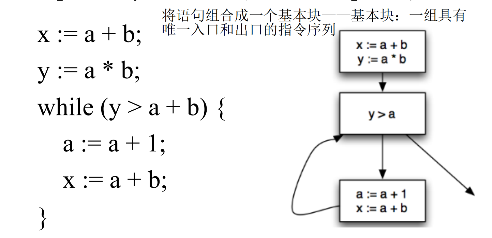
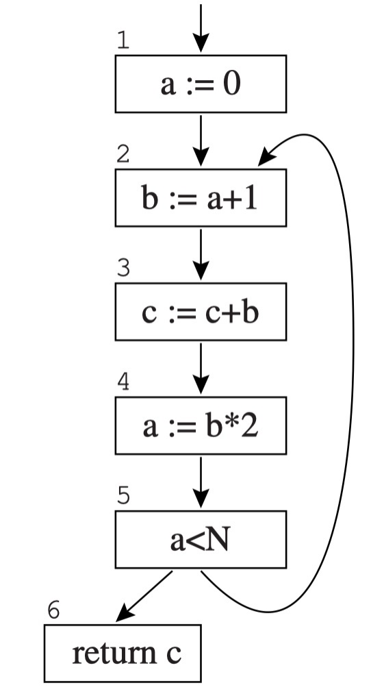
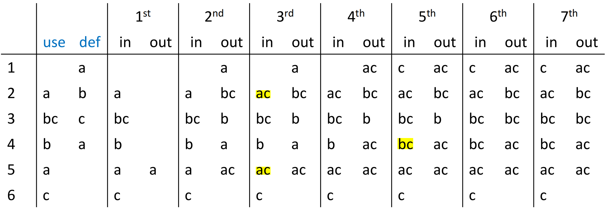

# Liveness Analysis 活跃变量分析
判断在程序执行的某个点上，一个变量的值是否可能在未来被使用，是寄存器分配、死代码消除的基础
# Compiler Optimizations
- Local: 基于 basic blocks
- Intraprocedural (or “global’): 基本块的控制流转移
- Interprocedural (or “whole-program”): Operate on > 1 procedure, up to whole program; Sometimes, at link time (LTO, link time optimization)
两步：
- Analyze program to gather “facts”
- Apply transformation (e.g., optimizations)
# Dataflow Analysis
Control Flow Graph: A directed graph 数据流图
– Nodes represent statements
– Edges represent control flow
CFG 的简化：基本块

# 变量的活跃性：
变量 x 在语句 s 处（执行 s 之前）处于活动状态，当且仅当满足以下三个条件：
- 存在一个使用 x 的语句 s’；
- 存在从 s 到 s’的路径；
- 这条路径上没有对 x 进行任何赋值操作
通过分析 liveness，我们可以实现：
- Register Allocation
- Code Optimizations：Remove unused assignments
- IR Construction： Optimize the construction of SSA
- Security/Reliability: Detect the use of uninitialized variables
# Dataflow Equations for Liveness 构建数据流方程
A CFG node has
- out-edges: lead to successor nodes
- in-edges: come from predecessor nodes
- pred [n]: the predecessors of node n 前驱
- succ [n]: the successors of node n 后继
几个定义：
- use [n]: 在节点 n 被读取或使用 (x = a + b 的 a 和 b, if (a < b) 的 a 和 b, return c 的 c)
- def [n]: 在节点 n 被定义 (x = a + b 的 x)
- in [n]: 在节点 n 之前，所有活跃变量的集合
- out [n]: 在节点 n 之后，所有活跃变量的集合
三条活跃性规则：
- if then for \all m \in pred[n] we have
- if then
- if and then
得到以下两个数据流方程：
一个节点在 n 的出口处活跃当且仅当在它后继的入口处是活跃的（活跃性的反向传播）
# 求解数据流方程
有了上面的两个数据流方程，就可以求解数据流方程了
算法：
1 | for each n |
- 将所有节点的
in和out集合初始化为空集。 - 写出
use[n]和def[n] - 用数据流方程更新
in和out集合 - 直到
in和out集合不再改变为止
例：

对于这个 CFG
每一次迭代如图：

# Improvements
# Use Basic Block
后面有点懒得看，先放着
# 集合的表示方法
对于 in, out, use, def 集合的表示和操作对性能有很大影响
# Bit Arrays
有点像 bit map，适用于稠密集合（1 比较多的，如果 0 太多就浪费了）
# Sorted Lists
适合稀疏集合（用一个链表存集合中的变量，Sorted by variable name/ID）